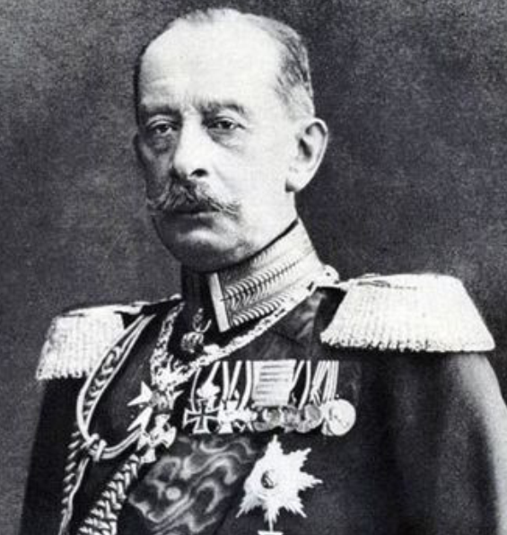
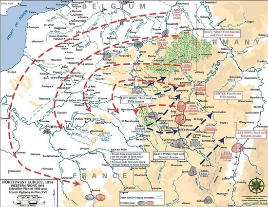

Мифы о плане Шлиффена
Автор статьи: Максим Вахминцев
Опубликовано: 28 января 2023
Опубликовано: 28 января 2023
Статья в группе ВК Историческая империя: https://clck.ru/3M6MZN
1) Мольтке-младший «испортил» план Шлиффена
План Шлиффена был составлен на момент 1905 года и предполагал войну на один фронт. 9 лет спустя реализовать его в прежнем виде было уже невозможно из-за усиления России и Франции. Как то показали дальнейшие события, действовать в одиночку против русской армии Австро-Венгрия не могла. А ведь именно этого ожидал от нее Шлиффен, планируя наступление во Франции. Мольтке-младший, в свою очередь, приняв дела у Шлиффена, внес изменения в его план.
По мнению ряда специалистов, они были оправданы, поскольку позволили немцам не допустить как прорыва французов к Рейну через ослабленный по замыслу Шлиффена левый фланг, так и прорыва русских армий в Восточную Пруссию и Померанию, откуда те могли бы начать наступление на Берлин. К тому же немало офицеров Генерального штаба считали план Шлиффена по охвату французских армий войсками усиленного правого крыла слишком амбициозным и рискованным. Их мнение разделял и Мольтке-младший.

.png){kind=link}
Альфред фон Шлиффен - начальник Генерального штаба Германии в 1892-1906 гг.
2) Вторжение в Бельгию германских войск не было оправданным
Изначально Шлиффен, как и Хельмут фон Мольтке-старший, намеревался лишь нанести удар со стороны Вердена и Меца во фланг и тыл французским войскам в случае их наступления в районе Эльзаса и Лотарингии. Перенос направления удара войск правого фланга на территорию Бельгии Шлиффен объяснял как стратегическими соображениями - отсюда было легче охватить французские армии, стоявшие возле Эльзас-Лотарингии, - так и опасениями за возможное нарушение британцами и французами бельгийского нейтралитета.
Изначально Шлиффен, как и Хельмут фон Мольтке-старший, намеревался лишь нанести удар со стороны Вердена и Меца во фланг и тыл французским войскам в случае их наступления в районе Эльзаса и Лотарингии. Перенос направления удара войск правого фланга на территорию Бельгии Шлиффен объяснял как стратегическими соображениями - отсюда было легче охватить французские армии, стоявшие возле Эльзас-Лотарингии, - так и опасениями за возможное нарушение британцами и французами бельгийского нейтралитета.
Стоит признать, что подобные опасения действительно имели под собой основание. Член Военного совета Франции генерал Виктор-Мишель предлагал нанести упреждающий удар со стороны Бельгии по территории Северной Германии, где концентрировались основные немецкие силы.
Но консервативно мыслившие офицеры Генерального штаба склонялись к идее сосредоточения всей массы французских войск в одном месте, дабы затем иметь возможность маневрировать и наносить контрудары в местах прорыва фронта германскими войсками. Они высмеяли предложение Виктора-Мишеля, после чего тот вынужден был уйти в отставку.

{kind=link}
Карта версии плана Шлиффена от 1905 г.
Несмотря на это, Шлиффен считал вражеское вторжение через территорию Бельгии наиболее вероятным и потому готовился войти туда первым как минимум для того, чтобы встретить противника на чужой территории и отодвинуть фронт боевых действий от самой Германии.
Ту же стратегию затем претворял в жизнь и его преемник Хельмут фон Мольтке-младший. А ведь если бы французское командование и политическое руководство куда серьезнее отнеслось к плану Виктора-Мишеля и претворило его в жизнь, едва ли германское вторжение в Бельгию и, следовательно, начало Первой мировой войны в целом стало бы возможным.
3) План Шлиффена предполагал исключительно наступление
Шлиффен готовился не только к наступлению германской армии в Бельгии и во Франции, но и к возможной необходимости ведения обороны по Рейну. Потеря Рейна, на берегах которого располагались ключевые немецкие промышленные предприятия, стала бы для Германии катастрофой и не позволила бы ей дальше вести войну. Потому еще со времен Мольтке-старшего немцы активно возводили здесь сеть укреплений. Предполагалось, что с опорой на них будут осуществляться контрудары во фланги и тылы пытающихся прорваться к Рейну и Саару французских войск.
В случае же бездействия французской армии с началом боевых действий Шлиффен рассчитывал перебросить основные германские силы против России, а войска, сосредоточенные против Франции, оттянуть глубже на территорию самой Германии. Они должны были быть немедленно переброшены к границе с Бельгией, как только французская армия начала бы наступление на Эльзас-Лотарингию и Рейн. Также стоит отметить, что документальные свидетельства - карты, штабные донесения, мобилизационные планы германской армии 1892-1906 гг. - говорят о том, что Шлиффен не планировал штурм Парижа и намеревался после выхода к французской столице повернуть войска на восток, дабы прижать силы противника к границе со Швейцарией.
{kind=link}
Атака французских войск во время битвы на Марне
Данный маневр германские армии должны были совершить и в августе 1914 года, когда стояли в нескольких десятках километров от Парижа. Но, как известно, французы нанесли удар возле Марны по флангам ослабленных войск фон дер Клюка и фон Бюлова, чем вынудили их отступить. Тем самым, единственный для Германии шанс уничтожить основные французские силы был упущен. По мнению многих историков, именно на Марне Германия фактически потерпела поражение во всей Первой мировой войне.
Рекомендуемая литература
Гёрлиц В. Германский Генеральный штаб. История и структура. 1657-1945. — М.: Центрполиграф, 2005.
Коленковский А. Маневренный период первой мировой империалистической войны 1914 г. — М.: Воениздат НКО СССР, 1940. — 368 с.
Меликов, В. А. Стратегическое развертывание. Т. 1. Первая империалистическая война 1914–1918 гг.: (по опыту первой империалистической войны 1914–1918 гг. и гражданской войны в СССР). / В. А. Меликов; Краснознам. и ордена Ленина Воен. акад. РККА им. М. И. Фрунзе. — 2-е изд., испр. и доп. — М.: Гос. воен. изд-во, 1939. — 527 с.
Рекомендуемая литература
Гёрлиц В. Германский Генеральный штаб. История и структура. 1657-1945. — М.: Центрполиграф, 2005.
Коленковский А. Маневренный период первой мировой империалистической войны 1914 г. — М.: Воениздат НКО СССР, 1940. — 368 с.
Меликов, В. А. Стратегическое развертывание. Т. 1. Первая империалистическая война 1914–1918 гг.: (по опыту первой империалистической войны 1914–1918 гг. и гражданской войны в СССР). / В. А. Меликов; Краснознам. и ордена Ленина Воен. акад. РККА им. М. И. Фрунзе. — 2-е изд., испр. и доп. — М.: Гос. воен. изд-во, 1939. — 527 с.